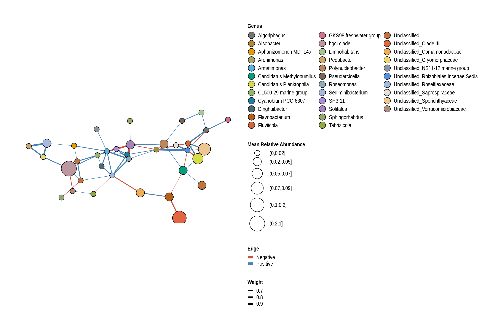

Communities
Profiles
for (risk in c('Low', 'High')){
cat('###', risk, '<br>', '\n\n')
profile <- phylosmith::phylogeny_profile(taxa_filter(lake_hl, "Lake_Risk",
risk), classification = 'Phylum', treatment = c('Location', 'Year'),
grid = TRUE, relative_abundance = TRUE)
print(profile)
cat('\n', '<br><br><br>', '\n\n')
}Low
High
Co-Occurrences
Calculate
lake_hl_co <- taxa_filter(conglomerate_taxa(lake_hl, "Genus", TRUE,
use_taxonomic_names = FALSE), c("Location", "Year"), frequency = 0.25)
lake_hl_co <- co_occurrence(lake_hl_co, treatment = c("Location", "Year"))
lake_co_table <- lake_hl_co[p < 0.05]
setorder(lake_co_table, -rho)Seperate High-Low
lake_co_table <- lake_co_table[rho < 0]
lake_co_table[,p:=NULL]
lake_co_table[, Risk := "Low"]
set(lake_co_table, unlist(sapply(high_risk_lakes, FUN=function(x)grep(x,lake_co_table$Treatment))), "Risk", "High")
lake_co_table <- lake_co_table[, c("X", "Y", "Treatment", "Risk", "rho")]
lake_co_table[,Edge := paste(X,Y,sep="-")]
high <- lake_co_table[unlist(sapply(high_risk_lakes, FUN=function(x)grep(x,lake_co_table$Treatment))),]
low <- lake_co_table[unlist(sapply(low_risk_lakes, FUN=function(x)grep(x,lake_co_table$Treatment))),]Lake Networks
phyloseq_obj <- relative_abundance(taxa_filter(conglomerate_taxa(lake_hl,
"Genus", TRUE, FALSE), c("Location", "Year"), frequency = 0.25))
for (year in unique(metadata$Year)){
cat('### ', year, '<br>', '\n\n')
cat('#### Lake {.tabset}', '\n', '<br>', '\n\n')
for (lake in unique(phyloseq_obj@sam_data$Location)){
cat('#####', lake, '<br>', '\n\n')
phylo_obj <- taxa_filter(phyloseq_obj, c("Location","Year"), c(lake), frequency = 0.5)
phylo_obj <- taxa_filter(phylo_obj, c("Year"), year, frequency = 0.7)
net <- co_occurrence_network(phylo_obj, classification = "Genus")
print(net + guides(fill = guide_legend(ncol = 3, override.aes = list(size = 5))))
cat('\n', '<br><br><br>', '\n\n')
}
cat('\n', '<br><br><br>', '\n\n')
}2018
Lake
George Wyth Beach
McIntosh Woods Beach
Backbone Beach
Gull Point Beach
Emerson Bay Beach
Crandall’s Beach
Lake Macbride Beach
Lake Keomah Beach
Viking Lake Beach

Big Creek Beach
Black Hawk Beach
Union Grove Beach
Lake of Three Fires Beach
Green Valley Beach
Lake Darling Beach
Brushy Creek Beach
2019
Lake
George Wyth Beach
McIntosh Woods Beach
Backbone Beach
Gull Point Beach
Emerson Bay Beach
Crandall’s Beach
Lake Macbride Beach
Lake Keomah Beach

Viking Lake Beach
Big Creek Beach
Black Hawk Beach
Union Grove Beach
Lake of Three Fires Beach
Green Valley Beach
Lake Darling Beach
Brushy Creek Beach

Summary of Networks
# high_ <- high[!(Edge %in% low$Edge),]
high <- high[, .(Count = .N, rho = mean(rho)), by = c("X", "Y", "Edge")]
high <- high[Count >= 7]
setorder(high, -Count)
# low_ <- low[!(Edge %in% high$Edge),]
low <- low[, .(Count = .N, rho = mean(rho)), by = c("X", "Y", "Edge")]
low <- low[Count >= 6]
setorder(low, -Count)Summary of Low-Risk Lakes
lowSummary of High-Risk Lakes
highco_occurrence_table <- high
phyloseq_obj <- relative_abundance(conglomerate_taxa(lake_hl, "Genus", TRUE, FALSE))
nodes <- data.table(as(access(phyloseq_obj, "tax_table"), "matrix"), keep.rownames = "Node_Name")
nodes[, `Mean Relative Abundance` := phylosmith:::bin(taxa_sums(phyloseq_obj)/nsamples(phyloseq_obj), nbins = 9)]
nodes <- nodes[nodes[["Node_Name"]] %in% c(as.character(co_occurrence_table$X),
as.character(co_occurrence_table$Y)), ]
co_occurrence_table[, `:=`(Weight, abs(rho))]
node_classes <- unique(c(co_occurrence_table$X, co_occurrence_table$Y))
clusters <- cluster_fast_greedy(simplify(graph_from_data_frame(d = co_occurrence_table, vertices = nodes, directed = FALSE), remove.multiple = TRUE, remove.loops = TRUE))$membership
cluster_sizes <- table(clusters)
nodes <- nodes[clusters %in% names(cluster_sizes[cluster_sizes > 2])]
co_occurrence_table <- co_occurrence_table[X %in% nodes$Node_Name &
Y %in% nodes$Node_Name]
net <- graph_from_data_frame(d = co_occurrence_table, vertices = nodes, directed = FALSE)
layout <- ggraph::create_layout(net, layout = "igraph", algorithm = "fr")
cluster <- cluster_fast_greedy(simplify(net, remove.multiple = TRUE, remove.loops = TRUE))$membership
communities <- data.table(layout[, c(1, 2)])
circles <- as(sf::st_buffer(sf::st_as_sf(communities, coords = c("x", "y")), dist = 0.5, nQuadSegs = 15), "Spatial")
circle_coords <- data.frame()
for (i in seq(nrow(communities))) {
circle_coords <- rbind(circle_coords, circles@polygons[[i]]@Polygons[[1]]@coords)
}
colnames(circle_coords) <- c("x", "y")
communities[, `:=`("Community", factor(cluster, levels = sort(unique(cluster))))]
communities <- data.table(circle_coords, Community = unlist(lapply(communities$Community, rep, times = nrow(circles@polygons[[i]]@Polygons[[1]]@coords))))
communities <- communities[, .SD[chull(.SD)], by = "Community", ]
hulls <- communities[, .SD[chull(.SD)], by = "Community", ]
community_count = length(unique(cluster))
community_colors <- create_palette(community_count, "#979aaa")
taxa <- as.data.table(as(lake_po@tax_table, 'matrix'), keep.rownames = "ASV")
layout_tax <- data.table(layout)
setnames(layout_tax, "name", "Genus")
layout_tax[taxa, on = 'Genus', Phylum := i.Phylum]
# layout_tax <- layout_tax[Genus != "Unclassified"]
node_colors <- phylosmith:::create_palette(length(unique(Phyla)))
layout$Phylum <- factor(layout$Phylum, levels = c(Phyla, unique(layout$Phylum)[!unique(layout$Phylum) %in% Phyla]))
# node_colors <- node_colors[factor(layout_tax$Phylum, levels = Phyla)]
# layout <- layout[!is.na(layout$Phylum),]classification <- "Phylum"
g <- ggraph(layout) + theme_graph() + coord_fixed()
g <- g + geom_polygon(data = hulls, aes_string(x = "x", y = "y", group = "Community"),
color = "#414a4c",
alpha = 0.2,
fill="#979aaa")
g <- g + geom_edge_link(aes_string(width = 'Count'), color = "tomato3") +
scale_edge_width_continuous(range = c(0.4, 2)) +
guides(colour = FALSE, alpha = FALSE, fill = guide_legend(ncol = 1), override.aes = list(size = 4))
g <- g + geom_point(aes_string(x = "x", y = "y", fill = "Phylum",
size = "`Mean Relative Abundance`"), pch = 21, color = "black") +
scale_fill_manual(values = node_colors, aesthetics = "fill") +
scale_size_discrete(range = c(4, 12))
g <- g + theme(legend.text = element_text(size = 12),
legend.title = element_text(size = 12, face = "bold"),
legend.key.size = unit(4, "mm"), legend.spacing.x = unit(0.005, "npc")) +
guides(colour = guide_legend(override.aes = list(size = 10)),
alpha = FALSE, fill = guide_legend(ncol = ceiling(length(unique(layout[[classification]]))/12),
override.aes = list(size = 5)), edge_color = guide_legend(override.aes = list(edge_width = 2)))
nodes_of_interest <- c("Actinobac")
nodes_of_interest <- c("Cyanobacteria", "Roseo", "Phenyl", "Ideon", "Sphaero", "Limnohabitans", "Limnoluna",
"Unclassified_Microscillaceae", "CL500", "GKS98", "hgc", "Silan")
coi <- subset(layout, apply(layout, 1, function(class) {
any(grepl(paste(nodes_of_interest, collapse = "|"),
class))
}))
g <- g + ggrepel::geom_label_repel(data = coi,
aes_string(x = "x", y = "y", fill = classification),
box.padding = unit(2, "lines"),
point.padding = unit(0.5, "lines"),
size = 4,
# arrow = arrow(length = unit(0.22, "inches"), ends = "last", type = "closed"),
show.legend = FALSE,
label = lapply(unname(apply(coi,
1, function(class) {
class[any(grepl(paste(nodes_of_interest,
collapse = "|"), class))][9]
})), `[[`, 1),
max.overlaps = 1000)
g
Schuyler Smith
Ph.D. Student - Bioinformatics and Computational Biology
Iowa State University. Ames, IA.